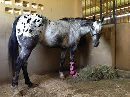

Meet Nameless, T-LAF's first rescue animal. He fell down from the stairs and broke one of his legs. When his owner brought him to the vet he thought Nameless would never be able to walk again. At the time the founders at T-LAF happened to be at the vet just chilling, and when they heard about Nameless they had to help. And soon after realized there are other animals with only three legs and so T-LAF came to be.

